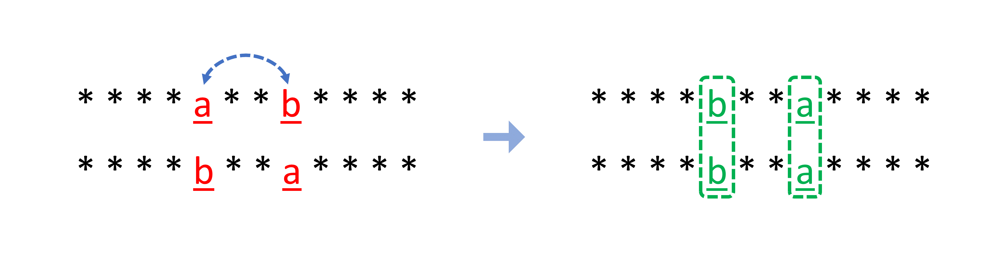

We are given two strings s and goal, and we have to check if we can swap characters at two
indices in the string s, such that string s will become equal to goal.
First of all, s and goal should have the same length, otherwise, they can never become
equal after one swap.
Now, let's assume we can change the string s into goal after swapping index x
and y.
Thus, it means initially before the swap all the characters except at indices x and y were
equal in strings s and goal.
We can iterate over all indices to check if characters at only two indices are different in strings s
and goal. If we have one or more than two indices having different characters, then it will never be
possible to make both strings equal with exactly one swap.
After the swap operation, the elements at index x and y should also become equal in both
strings, which means:
s the character at index x was present at index y in string
goal, and
s the character at index y was present at index x in string
goal
Now, what if the strings s and goal were initially already the same?
Say if string s = 'aabcda' and goal = 'aabcda'.
We have to swap two characters in the string s such that it will remain the same, which can be achieved
by performing the swap on two characters that are the same.
So, if s = goal and string s has at least one character appearing multiple times, then it
is possible to swap two characters in s without changing it and keep s = goal.
If string s = 'abcde' and goal = 'abcde', there is no way we can keep string s
the same after performing one swap operation on it because there is no character appearing multiple times.
s and goal is different then they can never
become equal, thus we return false.
s == goal:
26 frequency to store the
frequency of each character of string s.
1 then we can swap those two same characters,
thus we will return true. Otherwise, we return false.
s != goal. We keep two variables firstIndex and secondIndex
both initialized to -1, to store the indices of string s having different characters
than string goal at the same index.
i in string s:
s[i] and goal[i] are not the same, then we store the current
index:
firstIndex == -1, it means this is the first index with a different character, thus we
update firstIndex = i. If firstIndex != -1, but secondIndex == -1,
it means this is the second index with a different character, thus we update secondIndex =
i.
firstIndex and secondIndex are not -1, then it means
this is the third index with a different character and it is not possible to make both strings equal
using only one swap, thus we can return false in this case.
firstIndex was updated and secondIndex == -1, i.e. we have only one
index with a different character, then we also can't make both strings equal and we return false.
s[firstIndex] must be
equal to goal[secondIndex] and s[secondIndex] must be equal to
goal[firstIndex], to make both strings equal after swapping.
Java
class Solution {
public boolean buddyStrings(String s, String goal) {
if (s.length() != goal.length()) {
return false;
}
if (s.equals(goal)) {
// If we have 2 same characters in string 's',
// we can swap them and still the strings will remain equal.
int[] frequency = new int[26];
for (char ch : s.toCharArray()) {
frequency[ch - 'a'] += 1;
if (frequency[ch - 'a'] == 2) {
return true;
}
}
// Otherwise, if we swap any two characters, it will make the strings unequal.
return false;
}
int firstIndex = -1;
int secondIndex = -1;
for (int i = 0; i < s.length(); ++i) {
if (s.charAt(i) != goal.charAt(i)) {
if (firstIndex == -1) {
firstIndex = i;
} else if (secondIndex == -1) {
secondIndex = i;
} else {
// We have at least 3 indices with different characters,
// thus, we can never make the strings equal with only one swap.
return false;
}
}
}
if (secondIndex == -1) {
// We can't swap if the character at only one index is different.
return false;
}
// All characters of both strings are the same except two indices.
return s.charAt(firstIndex) == goal.charAt(secondIndex) &&
s.charAt(secondIndex) == goal.charAt(firstIndex);
}
}
C++
class Solution {
public:
bool buddyStrings(string s, string goal) {
if (s.size() != goal.size()) {
return false;
}
if (s == goal) {
// If we have 2 same characters in string 's',
// we can swap them and still strings will remain equal.
vector frequency(26, 0);
for (auto& ch : s) {
frequency[ch - 'a'] += 1;
if (frequency[ch - 'a'] == 2) {
return true;
}
}
// Otherwise, if we swap any two chanacters it will make strings unequal.
return false;
}
int firstIndex = -1;
int secondIndex = -1;
for (int i = 0; i < s.size(); ++i) {
if (s[i] != goal[i]) {
if (firstIndex == -1) {
firstIndex = i;
} else if (secondIndex == -1) {
secondIndex = i;
} else {
// We have atleast 3 indices with differnet characters,
// thus, we can never make strings equal with only one swap.
return false;
}
}
}
if (secondIndex == -1) {
// We can't swap if character at only one index is different.
return false;
}
// All characters of both the string are same except two indices.
return s[firstIndex] == goal[secondIndex] &&
s[secondIndex] == goal[firstIndex];
}
};
Python3
class Solution:
def buddyStrings(self, s: str, goal: str) -> bool:
if len(s) != len(goal):
return False
if s == goal:
# If we have 2 same characters in string 's',
# we can swap them and still the strings will remain equal.
frequency = [0] * 26
for ch in s:
frequency[ord(ch) - ord('a')] += 1
if frequency[ord(ch) - ord('a')] == 2:
return True
# Otherwise, if we swap any two characters, it will make the strings unequal.
return False
firstIndex = -1
secondIndex = -1
for i in range(len(s)):
if s[i] != goal[i]:
if firstIndex == -1:
firstIndex = i
elif secondIndex == -1:
secondIndex = i
else:
# We have at least 3 indices with different characters,
# thus, we can never make the strings equal with only one swap.
return False
if secondIndex == -1:
# We can't swap if the character at only one index is different.
return False
# All characters of both strings are the same except two indices.
return s[firstIndex] == goal[secondIndex] and s[secondIndex] == goal[firstIndex]
JavaScript
var buddyStrings = function(s, goal) {
if (s.length !== goal.length) {
return false;
}
if (s === goal) {
// If we have 2 same characters in string 's',
// we can swap them and still the strings will remain equal.
const frequency = Array(26).fill(0);
for (const ch of s) {
frequency[ch.charCodeAt() - 'a'.charCodeAt()] += 1;
if (frequency[ch.charCodeAt() - 'a'.charCodeAt()] === 2) {
return true;
}
}
// Otherwise, if we swap any two characters, it will make the strings unequal.
return false;
}
let firstIndex = -1;
let secondIndex = -1;
for (let i = 0; i < s.length; ++i) {
if (s[i] !== goal[i]) {
if (firstIndex === -1) {
firstIndex = i;
} else if (secondIndex === -1) {
secondIndex = i;
} else {
// We have at least 3 indices with different characters,
// thus, we can never make the strings equal with only one swap.
return false;
}
}
}
if (secondIndex === -1) {
// We can't swap if the character at only one index is different.
return false;
}
// All characters of both strings are the same except two indices.
return (s[firstIndex] === goal[secondIndex] &&
s[secondIndex] === goal[firstIndex]);
};
Here, nn
is the number of characters in the string s.
Time complexity: O(n)O(n)
s once. Thus, we will take O(n)O(n) time.
Space complexity: O(1)O(1)
s, which is considered as constant space usage.